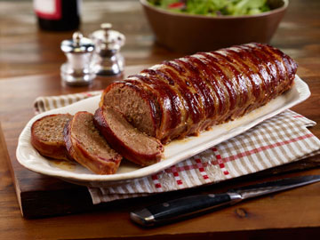
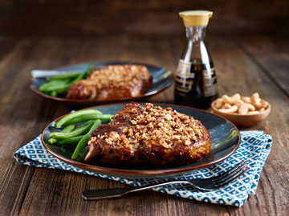
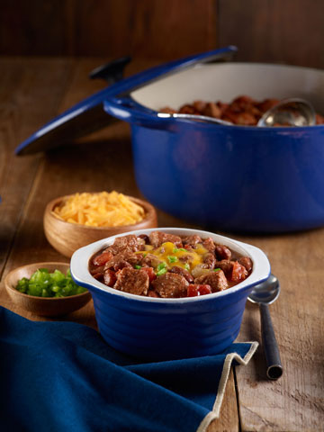
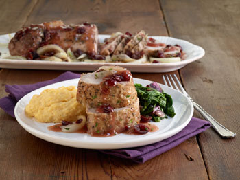

13 Great Recipes!
-  Bacon-Wrapped Meatloaf
-  Asian Cashew Crusted Pork Chops
- Chile Verde Stew
- Crispy Pork Chop “German Style”
- Easy & Elegant Pork Tenderloin
- Easy Ground Pork Lasagna
- Honey Mustard BBQ Pork Medallions
- Pork & Sweet Potato Pot Roast
- Pork Pot Pie
- Pork Tenderloin with Romesco Sauce
-  Slow-Cooked Pork Chili
- White Chili
-  Winter Cranberry Baked Pork Tenderloin
Ingredients
- 1 (16-oz.) pkg. Farmland® Double Smoked Bacon
- 1 lb. Farmland® Fresh Ground Pork
- 1 lb. lean ground beef
- 2 eggs
- 1 small onion, finely diced
- ½ green bell pepper, finely diced
- ¾ cup barbecue sauce
- ½ cup crushed crackers
- 1 ½ teaspoons salt
- ½ teaspoon ground black pepper
Bacon-Wrapped Meatloaf
Makes about 8 servings
Prep Time: 2 hours
Cooking Instructions
- Heat oven to 350°F. Weave all slices of bacon together into a mat on parchment paper or cutting board.
- Combine all ingredients except bacon in large bowl; mix well.
- Place pork mixture onto one end of the bacon mat and shape into a long loaf.
- Roll bacon mat around meatloaf; place seam-side-down on rack in shallow roasting pan.
- Bake at 350°F. for 1 ½ hours until internal temperature reaches 160°F. and bacon is crisp. Remove from oven and turn oven to Broil setting. Carefully roll meatloaf over so that the bottom is on top. Place under broiler to crisp bacon, about 5 minutes.
- Let stand 15 minutes before slicing. Serve with additional barbecue sauce.
Ingredients
- 1⁄3 cup mild and creamy Dijon mustard
- 2 tablespoons fresh grated ginger
- 2 teaspoons soy sauce
- 1 cup cashews
- 2 teaspoons coarsely ground black pepper
- 4 Farmland® Bone-In or Boneless Pork Chops (1-inch thick)
- ¼ cup oil
Asian Cashew Crusted Pork Chops
Makes 4 servings
Prep Time: 1 ½ hours
Cooking Instructions
- In small bowl, combine mustard, ginger and soy sauce; mix well. Combine cashews and pepper in blender or bowl of food processor; process until nuts are finely chopped.
- Dip each pork chop in mustard to coat all sides, then dip in cashews. Arrange coated chops in single layer on plate; cover and refrigerate 1 to 8 hours.
- Heat oil in large skillet over medium-high heat. Add chops to skillet. Cook 3 minutes, turn and cook additional 3 minutes to sear surface. Continue cooking until internal temperature reaches 150°F, carefully turning chops occasionally.
Ingredients
- 1 Farmland® Boneless Pork Butt (about 5 lbs.)
- 1 (28-oz.) can green chile enchilada sauce
- 1 cup chopped onions
- 2 teaspoons olive oil
- 2 (16-oz.) jars salsa verde
- 2 large baked potatoes, cubed (skin on)
- 2 teaspoons minced garlic
- Sour cream
- Fresh cilantro
Chile Verde Stew
Makes 12 servings
Prep Time: 8 ½ hours
Cooking Instructions
- Place pork butt in 4- to 5-quart slow cooker; pour enchilada sauce over top. Cover and cook on Low for 8 to 10 hours (High: 4 to 5 hours). Remove butt and cut into 1-inch pieces.
- Sauté onions in oil until tender and browned. Combine pork with onions, salsa verde, potatoes, and garlic in large saucepan or stockpot. Add enough of the enchilada sauce/pork broth from the slow cooker to make desired stew-like consistency.
- Bring to a boil over medium heat. Reduce heat and simmer 15 minutes. Serve with dollop of sour cream and cilantro.
Ingredients
- 4 Farmland® All Natural Center Cut Fresh Pork Chop
- Salt and pepper
- 4 eggs, beaten
- 3 cups seasoned breadcrumbs
- 2 cups sauerkraut, drained
- ¾ cup country Dijon mustard
- ¼ cup mayonnaise or light mayonnaise
Crispy Pork Chop “German Style”
Makes 4 servings
Prep Time: 30 mins
Cooking Instructions
- Heat oven to 400°F. Season pork chops with salt and pepper.
- Place beaten eggs and breadcrumbs into two separate shallow dishes. Dip a pork chop into egg and then breadcrumbs, making sure to pat crumbs onto all surfaces of the chop; place onto baking sheet. Repeat with remaining chops.
- Bake at 400°F. for 15 to 20 minutes until internal temperature reaches 150°F.
- Meanwhile, heat sauerkraut in medium saucepan over low heat. Mix together mustard and mayonnaise in small bowl.
- To serve, place sauerkraut on plate, top with chop and spoonful of mustard sauce.
Ingredients
- 2 lbs. Farmland® Peppercorn & Garlic Seasoned Tenderloin
- 2 cups Italian seasoned bread crumbs
- ½ cup olive oil
- *Served with orange zest asparagus
Easy & Elegant Pork Tenderloin
Makes 6 servings
Prep Time: 10 minutes
Cook Time: 35 minutes
Cooking Instructions
- Preheat oven to 425°F.
- Mix bread crumbs and olive oil in bowl to reach consistency that would be moist enough to stick to the meat when pressed. Place pork on a shallow cooking sheet. Press the crumb mixture onto all sides of the meat until there is no pink showing, usually ¼ inch thick.
- Bake for at least 35 minutes until a meat thermometer reads 165°F or until there is no pink when the pork is cut. Let the pork rest for 10 minutes, then cut into ½ inch slices.
Ingredients
- ½ lb. Farmland® Fresh Ground Pork
- ½ lb. lean ground beef
- 1 (1 lb. 10-oz.) jar pasta sauce
- 1 (14.5-oz.) can diced tomatoes
- 1 (15-oz.) container light ricotta cheese
- 1 egg
- ½ cup grated Parmesan cheese
- 1 teaspoon Italian seasoning
- 9 oven ready lasagna noodles
- 3 cups (12-oz.) shredded mozzarella cheese
Easy Ground Pork Lasagna
Makes 12 servings
Prep Time: 1 ½ hours
Cooking Instructions
- Heat oven to 350°F. Cook ground pork and beef over medium-high heat until meat is well browned. Remove from heat; stir in pasta sauce and tomatoes.
- Combine ricotta cheese, egg, Parmesan cheese and Italian seasoning in small bowl; mix well.
- Spoon 1 cup meat sauce into bottom of 13x9x2-inch baking dish. Arrange 3 noodles on top of sauce. Top noodles with 1⁄3 ricotta, 1⁄3 remaining meat sauce and 1 cup mozzarella cheese. Repeat layers 2 more times.
- Cover and bake at 350°F. for 45 minutes. Remove cover and bake an additional 15 minutes. Let stand 15 minutes before serving.
Ingredients
- 1 Farmland® Sweet Barbecue Seasoned Loin Filet
- 2 tablespoons honey
- 2 tablespoons stone ground mustard
- 1 ½ cups corn flake cereal, slightly crushed
- 2 tablespoons olive oil
Honey Mustard BBQ Pork Medallions
Makes 4 servings
Prep Time: 15 mins.
Cook Time: 10 mins.
Marinating Time: 30 mins
Cooking Instructions
- Cut loin filet diagonally into 1-inch thick slices; flatten with heel of hand.
- Combine honey and mustard in shallow dish; mix well. Dip pork slices into honey mixture then coat both sides with cereal.
- Heat oil in large skillet over medium-high heat. Cook pork medallions about 3 minutes per side until internal temperature reaches 150°F.
Ingredients
- 6 medium sweet potatoes, peeled and cut lengthwise into sixths
- 3 Granny Smith apples, cored and cut into quarters
- 1 small sweet onion, cut into sixths
- 2 ½ to 3 lbs. Farmland® Boneless Pork Butt
- ½ cup apple cider
- 1 tablespoon dried rubbed sage
- 2 teaspoons dried rosemary
- 1 teaspoon black pepper
- ½ teaspoon salt
Pork & Sweet Potato Pot Roast
Makes 6 servings
Prep Time: 8 hours
Cooking Instructions
- Layer sweet potatoes, apples and onion in 3 ½ - to 4-quart slow cooker. Place pork on top.
- Pour apple cider over roast; sprinkle with remaining ingredients. Cover and cook on Low 8 to 10 hours (High: 4 to 5 hours).
Ingredients
- 1 (16.3-oz.) can jumbo biscuits
- 1 cup diced cooked Farmland® Rosemary and Olive Oils Seasoned Loin Filet or Sirloin Roast
- 1 cup chopped frozen broccoli florets, thawed
- (10 ¾-oz.) can condensed broccoli cheese soup
- Shredded Swiss or Cheddar cheese, optional
Pork Pot Pie
Makes 4 servings
Prep Time: 40 minutes
Cooking Instructions
- Heat oven to 375°F. Separate biscuits and press with hands into a 5- to 6-inch circle. Place 1 round in each of 8 regular-size muffin cups. Firmly press in bottom and up sides, forming ½-inch rim.
- Combine remaining ingredients; mix well. Spoon filling into each biscuit crust, pushing into crust and mounding on top. If desired, sprinkle top of each with 1 tablespoon shredded cheese.
- Bake at 375°F. for 25 to 30 minutes until biscuits are golden brown. Cool in pan 5 minutes before removing to serve.
Ingredients
- 1 Farmland® Peppercorn & Garlic Seasoned Pork Tenderloin
- ¼ cup toasted sliced almonds
- 1 ½ slices whole wheat bread, toasted
- 2 large tomatoes, roasted
- ½ (15-oz.) jar roasted red peppers
- ½ fresh lemon, squeezed
- 2 tablespoons red wine vinegar
- ½ teaspoon fresh ground black pepper, or to taste
- Salt, to taste
Pork Tenderloin with Romesco Sauce
Makes 5 servings
Prep Time: 30 minutes
Cooking Instructions
- Roast tenderloin oven at 425°F. for 25 to 30 minutes until internal temperature reaches 150°F.
- Grind almonds and bread in blender until fine. Add tomatoes and red peppers; blend until smooth.
- Stir in remaining ingredients. Serve at room temperature over sliced tenderloin.
Ingredients
- 2 lbs. diced Farmland® All Natural Boneless Fresh Pork Butt
- 3 cups low sodium chicken stock
- 3 (15-oz.) cans kidney beans, rinsed and drained
- 1 (28-oz.) can plum tomatoes
- 4 cloves garlic, thinly sliced
- 1 cup diced yellow onion
- ¼ cup chili powder
- 2 tablespoons tomato paste
- 2 teaspoons kosher salt
Optional garnish: sour cream or Greek yogurt, sliced green onions, shredded Cheddar cheese, and tortilla chips.
Slow-Cooked Pork Chili
Makes 8 to 10 servings
Prep Time: 8 1/2 hours
Cooking Instructions
- Place all ingredients into 3 ½- to 4-quart slow cooker; mix well. Cover and cook on Low 8 to 10 hours (High: 4 to 5 hours).
- Serve in bowls topped with desired garnishes.
Ingredients
- 2 tablespoons olive oil
- 1 Farmland® Garlic & Herb Seasoned Loin Filet, cut into ½-inch cubes
- 1 medium yellow onion, diced
- 1 (32-oz.) box no salt added chicken stock
- 2 (15-oz.) cans Great Northern white beans
- 1 lb. Yukon gold potatoes, diced
- 1 (1-lb.) bag frozen corn kernels
- 2 (4-oz.) cans chopped fire roasted green chiles
- 1 (14.75-oz.) can cream style corn
- 1 ½ teaspoons salt
- 1 teaspoon white pepper
- 1 teaspoon minced garlic
- 1 (16-oz.) container light sour cream
- 2 tablespoons minced fresh cilantro
White Chili
Makes 12 to 16 servings
Prep Time: 1 hour
Cooking Instructions
- Heat oil in 6-quart stock pot. Stir fry pork cubes 7 minutes on high heat. Add onion; stir fry 5 minutes.
- Stir in remaining ingredients except sour cream and cilantro. Bring to a boil over medium-high heat; boil 15 minutes. Reduce heat and simmer 30 minutes, stirring occasionally.
- Remove chili from heat. Stir in sour cream and cilantro just before serving.
Ingredients
- 1 Farmland® All Natural Fresh Pork Tenderloin
- 1 teaspoon dried thyme
- 1⁄8 teaspoon ground nutmeg
- Salt and pepper
- 1 cup thinly sliced yellow onions
- ¾ cup dried cranberries
- 1 cup low sodium chicken stock
Optional pairing: instant soft polenta or sautéed spinach.
Winter Cranberry Baked Pork Tenderloin
Makes 4 servings
Prep Time: 30 mins
Cooking Instructions
- Heat oven to 400°F. Season pork chops with salt and pepper.
- Place beaten eggs and breadcrumbs into two separate shallow dishes. Dip a pork chop into egg and then breadcrumbs, making sure to pat crumbs onto all surfaces of the chop; place onto baking sheet. Repeat with remaining chops.
- Bake at 400°F. for 15 to 20 minutes until internal temperature reaches 150°F.
- Meanwhile, heat sauerkraut in medium saucepan over low heat. Mix together mustard and mayonnaise in small bowl.
- To serve, place sauerkraut on plate, top with chop and spoonful of mustard sauce.